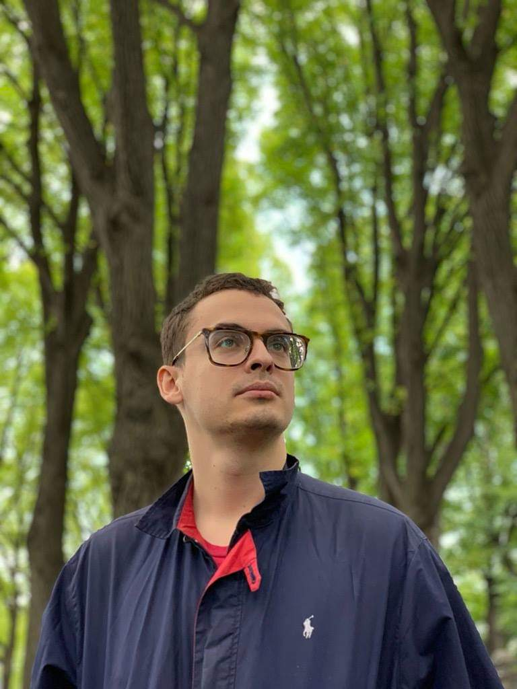

mitropol @ mit . edu

I also go by: Danny, Dan, Dani, Mito, Даня, Даниил Всеволодович Митропольский, 水戸智, 刘智龙, דני
💡 Top News! 💡
- My paper with my Master's Thesis student Laura Ying Schulz ("LYS") on CFG "subgrammars" and Language Modeling got accepted as a Spotlight paper (top 2%) at ICML in Seoul
- Along with my UROP Susan Hong, we've written a paper on the generalized Turing Test, or Intelligence as Indisinguishability.
This is a new, TCS-way of defining and studying intelligence!
For a brief introduction, see my recent blog post
- I'll be presenting on our NEMO work on Biologically-Plausible Language Acquisition at CCN 2026, August 3-6 in New York
- I'm starting as Assistant Professor of CS at Tufts this Fall
I am currently a Lisa K. Yang ICoN Postdoctoral Fellow at MIT, in the McGovern Institute for Brain Reserach and CSAIL. I am a member of the Poggio Lab.
I am excited to announce that in Fall 2026, I will be starting as an Assistant Professor of Computer Science at Tufts University.
I will be actively recruiting PhD students (as well as postdocs and possibly undergrads, masters, visiting students interested in research), specially to start in Spring or Fall 2027.
Bio
I received my PhD in Computer Science in 2024 at Columbia University.
I had the pleasure of being adbised by Christos Papadimitriou and Tal Malkin.
I was the recipient of the Davide Giri Memorizal Prize, and the Andrew P. Kosoresow Memorial Award, and a CS Service Award.
I was a finalist in Columbia's 3-Minute Thesis Competition.
Before my PhD, I lived in San Francisco and worked as a Software Engineer at Google in Core Search.
Before that, I did my undergrad at Yale where I graduated summa cum laude with an intensive B.S. in Mathematics and a B.S. in Computer Science.
I received the George Beckwith Prize, and the Deforest Prize in Mathematics.
As a child I lived in Canada, Russia, and Spain, which is how I learned those languages.
TCS of Intelligence, and other Research Areas
My main research area is the theoretical computer science of intelligence, more specifically:
- the theoretical CS of natural intelligence, that is, the brain: biologically-plausible neural network models of the brain
- the theoretical CS of artificial intelligence, especially the connections between formal language theory and complexity theory and AI
- the theoretical CS of intelligence itself -- intelligence as indistinguishability and developing a TCS theory around it
However, I am interested in everything. My other main interests include:
- complexity theory, particularly total complexity and foundational cryptography
- language: computational linguistics, NLP
Languages
Languages are one of my greatest passions. I love to speak them, so do not be shy if you know any of these.
- Fluent (C1+) in English, French, Spanish, Portuguese, Italian, Russian, Polish, Chinese (Mandarin), Japanese, German, American Sign Language (ASL), Arabic, Hebrew
- Advanced / Conversational (B2+) in Korean, Vietnamese
- Working on (B1+) Greek, Hindi
In Submission
- D. Mitropolsky, S. Hong, R. Neumarker, E. Rimoldi, T. Poggio, "The Generalized Turing Test: A Foundation for Comparing Intelligence", 2026, arXiv
- D. Mitropolsky, C. Papadmitriou, "Simulated Language Acquisition in a Biologically Realistic Model of the Brain", 2025, arXiv
- M. Dabagia, D. Mitropolsky, C. Papadimitriou, S. Vempala "Coin-Flipping In The Brain: Statistical Learning with Neuronal Assemblies", 2024 arXiv
Publications
- D. Mitropolsky, L. Y. Schulz, T. Poggio, "Unraveling Syntax: Language Modeling and the Substructure of Grammars", International Conference on Machine Learning (ICML) Spotlight Paper, awarded to top 2% of submissions, 2026, arXiv
- P. Harsha, D. Mitropolsky, A. Rosen, "Downward Self-Reducibility in TFNP", 14th Innovations in Theoretical Computer Science Conference (ITCS), 2023, arXiv
- D. Mitropolsky, A. Ejaz, M. Shi, M. Yannakakis, C. Papadimitriou, "Center-Embedding and Constituency in the Brain and a New Characterization of Context-Free Languages", Natural Logic Meets Machine Learning (NALOMA), 2022
- F. d'Amore, D. Mitropolsky, P. Creszenzi, E. Natale, C. Papadimitriou, "Planning with Biological Neurons and Synapses", (AAAI), 2022, arXiv
- D. Mitropolsky, M. Collins, C. Papadimitriou, "A Biologically Plausible Parser", Transactions of the Association for Computational Linguistics (TACL), 2021, arXiv
- R. Kleinberg, D. Mitropolsky, C. Papadimitriou, “Total Functions in the Polynomial Hierarchy”, 12th Innovations in Theoretical Computer Science Conference (ITCS), 2021, ECCC
- C. Papadimitriou, S. Vempala, D. Mitropolsky, M. Collins, W. Maass, “Brain Computation by Assemblies of Neurons”, in the Proceedings of the National Academy of Sciences PNAS, vol. 117, no. 25, June 2020, PNAS
- C. Papadimitriou, S. Vempala, D. Mitropolsky, M. Collins, W. Maass, L. Abbott, “A Calculus for Brain Computation”, in CCNeuro, Berlin, Germany, 2019.
- D. Jensen, A. Deveau, J. Kainic, D. Mitropolsky, “Gonality of Random Graphs”, in Involve, vol. 9, no 4, 715-720, 2016
Selected Talks
- Invited talk at STOC Workshop on Total Search Problems in TCS, June 2025, Workshop
- Invited talk on my brain research at MIT CBMM (Center for Brains, Minds and Machines), Dec. 2023, Link (recording of in-person talk)
- Invited talk on my brain research at the Brown Theoretical Computer Science Seminar (this one is more CS-oriented) , Dec. 2023 Link (recording of in-person talk)
- Talk on downward self-reducibility in TFNP (and the unlikelihood of recursive algorithms for factoring!), Jan 2023 Link (Zoom talk)
- Talk on total functions and the polynomial hierarchy (a new area of complexity theory!), Jan 2021, Link (Zoom talk)
Official Advisees
Master's Research Thesis Supervisor for:
- Laura Ying Schulz ("LYS"), 2025 (ETH Zurich, visiting masters student at MIT) (resulting in "Unraveling Syntax: Language Modeling and the Substructure of Grammars", ICML Spotlight Paper, 2026, arXiv)
UROP (Undergraduate Research Opportunity) Supervisor for:
- Susan H. Hong, Spring 2026 (MIT) (resulting in "The Generalized Turing Test: A Foundation for Comparing Intelligence", 2026, arXiv)
Errata for Computational Complexity (Arora Barak)
Teaching
These are the courses I have taught as the official course instructor:
TA-ing